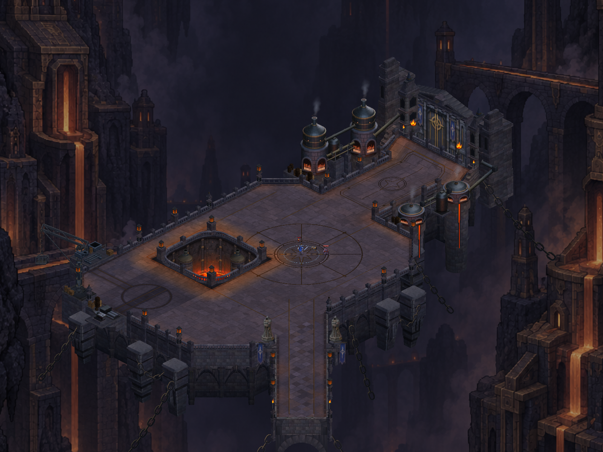
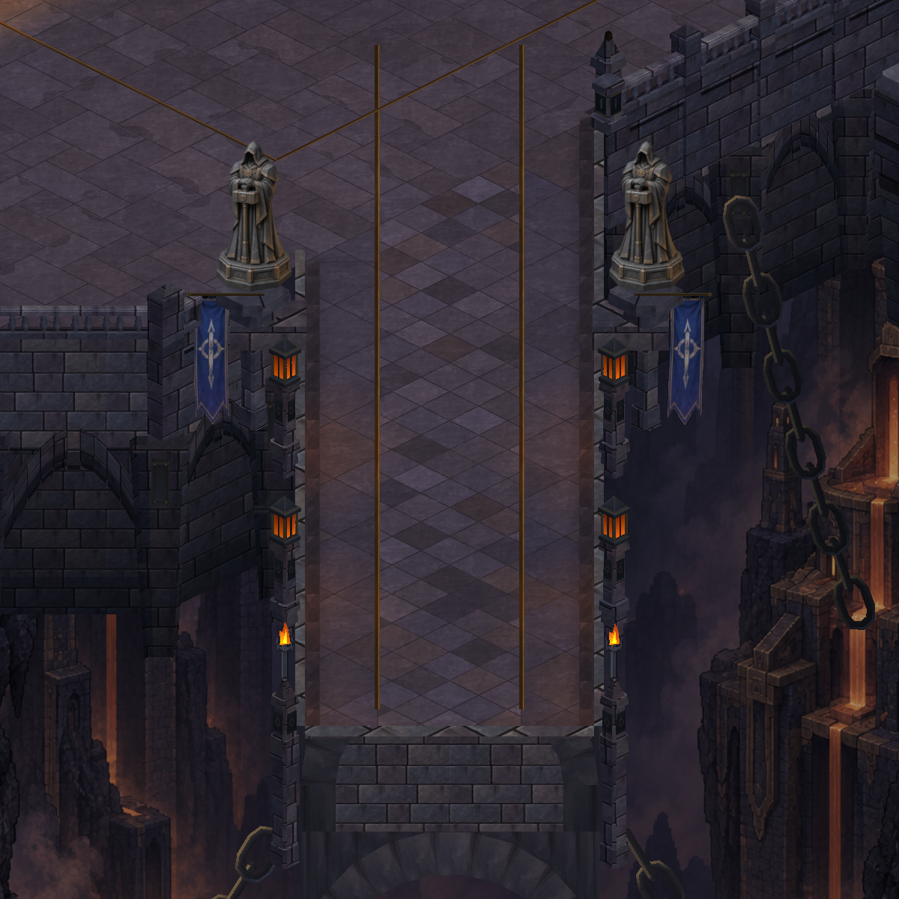
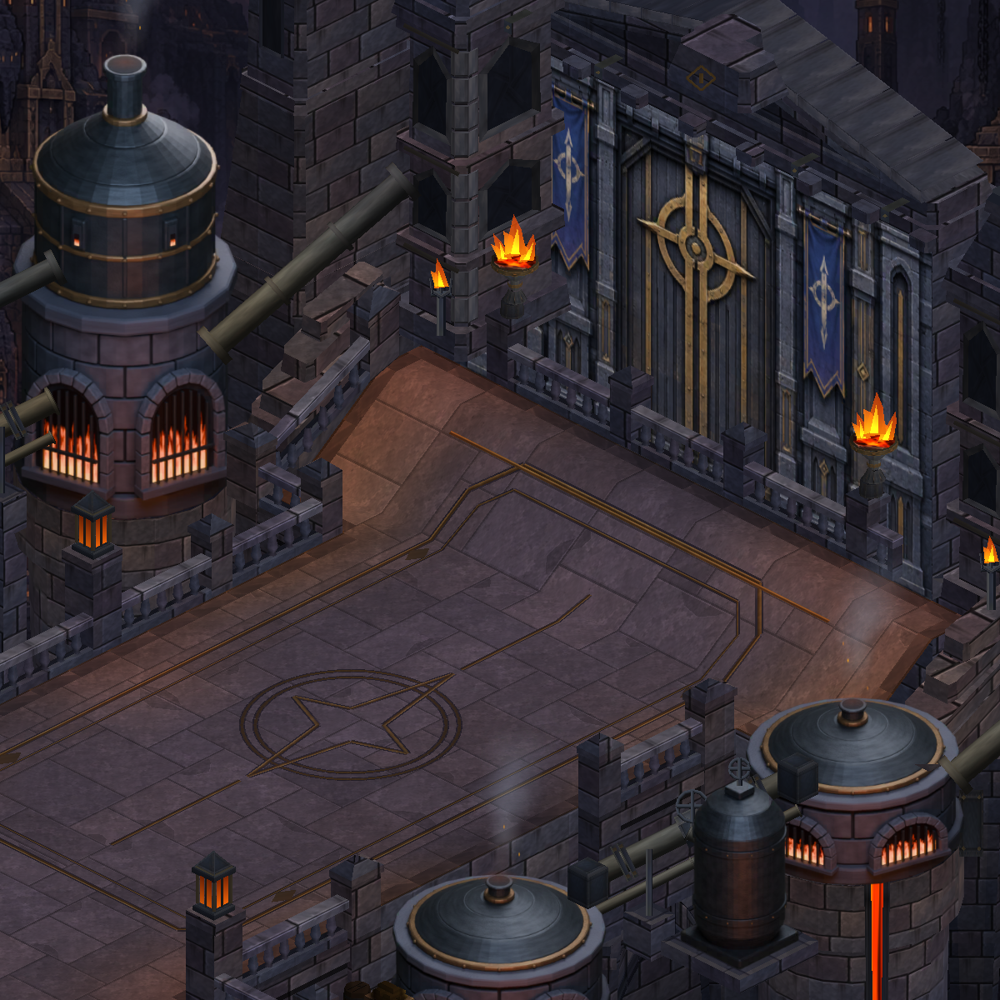
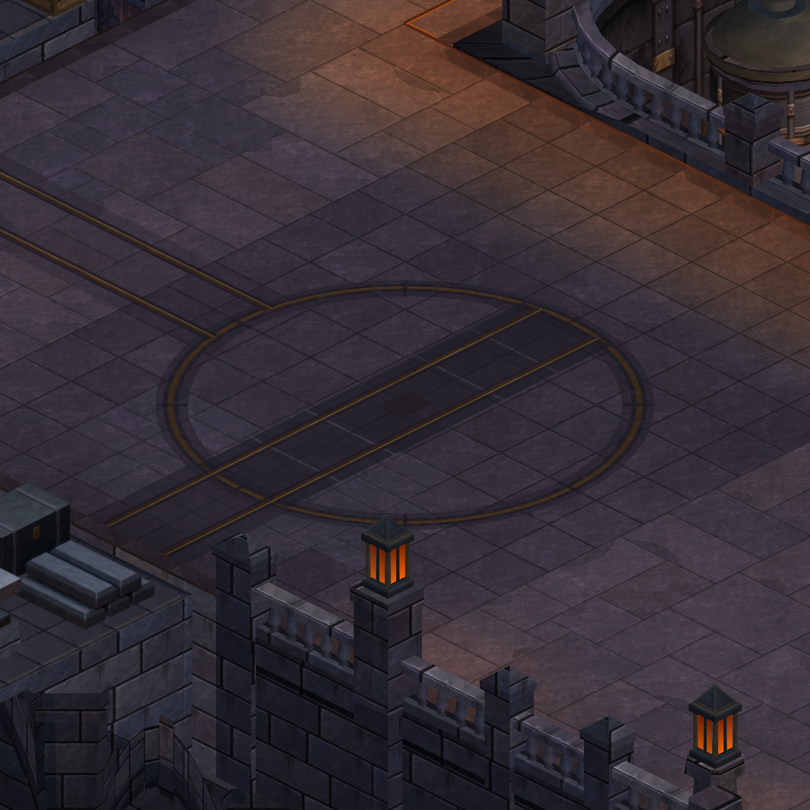
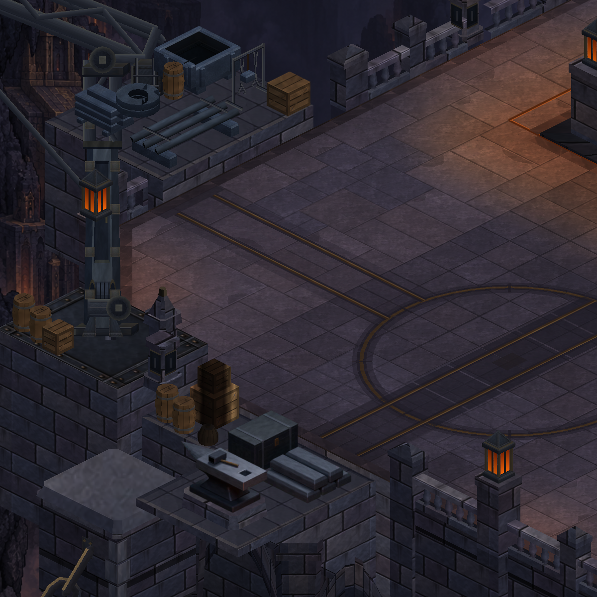
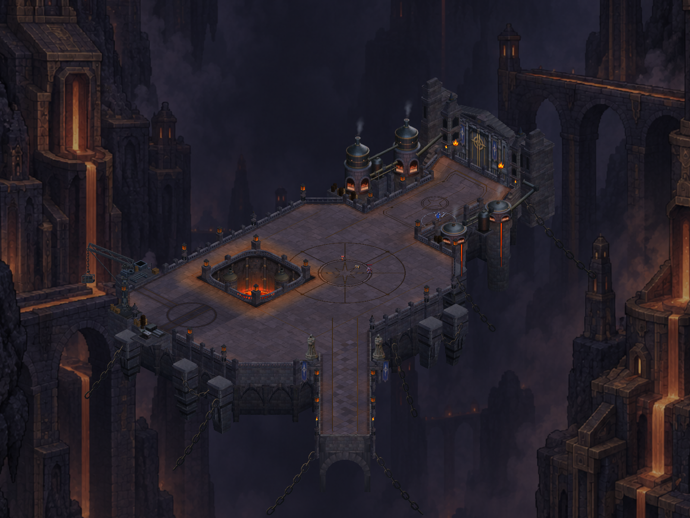
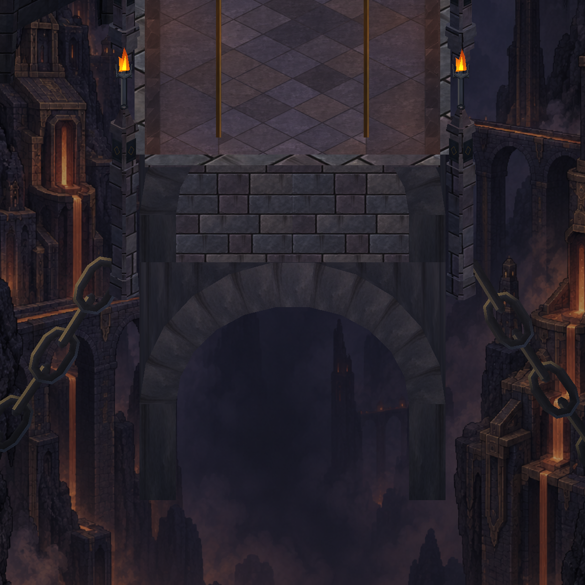
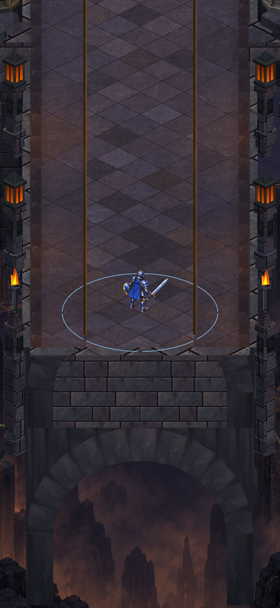
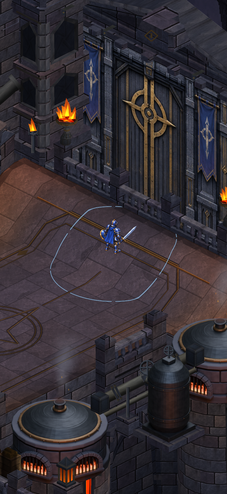

Cryptforge · reference-led production geometry
A longer entrance.
A fortified gate. A working yard.
Three connected architectural changes build on the expanded foundry court. Compare actual Unity geometry with the preceding build and the approved concept.

The combined capture is being prepared.
After · actual Unity production geometry. Open the image for full resolution.
Entrance bridgeA longer, wider physical approach with coordinated deck and supports.
Gate enclosureCurtain-wall wings and broad buttresses frame the existing door.
Production yardFlush freight-transfer plates and embedded rails connect the workstations.
The rail channels are level with the paving and remain freely walkable. The approved reference is a separate concept image; it is not presented as a runtime result.
Inspect the three features

Entrance bridge · actual deck, parapets and supporting architecture.

Gatehouse · the existing doorway gains a substantial enclosure.

Production yard · segmented transfer bed and plain mechanical rails, flush with the floor.

Workshop context · crane, salvage and stock remain outside the playable route.
Complete structure and gameplay-scale views
The complete-map view uses a wider inspection camera to include the extended bridge foundations. The comparison above retains the same before/after camera; gameplay camera width is unchanged.

Complete structure · wider inspection camera.
Bridge foundations · returns draw behind arch faces.
New playable bridge · production camera width, HUD hidden.
Gate approach · production camera width, HUD hidden.Evidence and status
The production-yard capture is visually reviewed: its embedded track is readable and clear of the furnace pit. Corrected bridge paving and support ordering passed a second image review. All 989 tests passed (409 pure .NET, 429 EditMode, 151 PlayMode). Android build passed; APK ready. Device installation and review await permission to close the current owner run. These are Unity architecture captures, not physical-phone or frame-time evidence.
The silhouette is closer to the approved concept, but reference-level fidelity is not complete. The western court still has a quieter, flatter industrial composition. Any future raised machinery must agree with the actual movement and collision contract.
Production notesBefore mesh countsAfter mesh countsOriginal concept